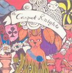

Home Artist links Label link

The Carpet Knights - Lost And So Strange Is My Mind
| Artist: | The Carpet Knights |
| Title: | Lost And So Strange Is My Mind |
| Label: | Transubstans Records Trans009 |
| Length(s): | 49 minutes |
| Year(s) of release: | 2005 |
| Month of review: | [02/2006] |
Line up
Jocke - guitar, vocals
Tobbe - guitar
Mattias - drums
Nils - bass
Manne - vocals, flute
Tracks
| 1) | All Be The Same | 3.05
|
| 2) | No Space To Spare | 4.23
|
| 3) | Zonked | 3.21
|
| 4) | The Mist | 4.46
|
| 5) | Fools And Silent Callers | 4.58
|
| 6) | Sad Soul | 6.48
|
| 7) | Feel It | 6.47
|
| 8) | Dab Nekan | 3.38
|
| 9) | Last Of Many | 10.42
|
Summary
The music
Like all releases that went before it (or at least the ones I heard) on the Transubstans label, this is another one filled with seventies inspired stuff. Most tracks have a rock feel akin to progressive. The addition of flute on more than an occasional basis adds some flavour. And introduces some would be references. At times there are some psychedelic bits, creating a bit of a float. Most of the time there is more of a rock sound, larded with some bluesy bits. The fact that a number of tracks had some nice riffs or melodic ideas injected into them picks up the result. No Space To Spare combines a nice pretty sophisticated melodic twist with flat vocals. Zonked has a bit of spunk combined with melody. Still, at times we also move towards less inspired, somewhat flat sounding sections. Sad Soul for instance is based on a rather schematic sounding blues cord, which cannot be repaired by the grave sound of the track.
After a two track slope Feel It bends the album back towards a more progressive sound. Best bit is the slow build towards the climax. This is more or less continued into Dab Nekan and Last Of Many.
Conclusion
This album has some things going for it. Even though it's not the most progressive bit ever released, it does hold a couple of nice melodies. Even though the vocals cannot be called an asset, they work well enough most of the time, resulting in a rack o' tracks that's pretty decent from a progressive point of view. It's too inconsistent, however, to be called a good album.
© Roberto Lambooy